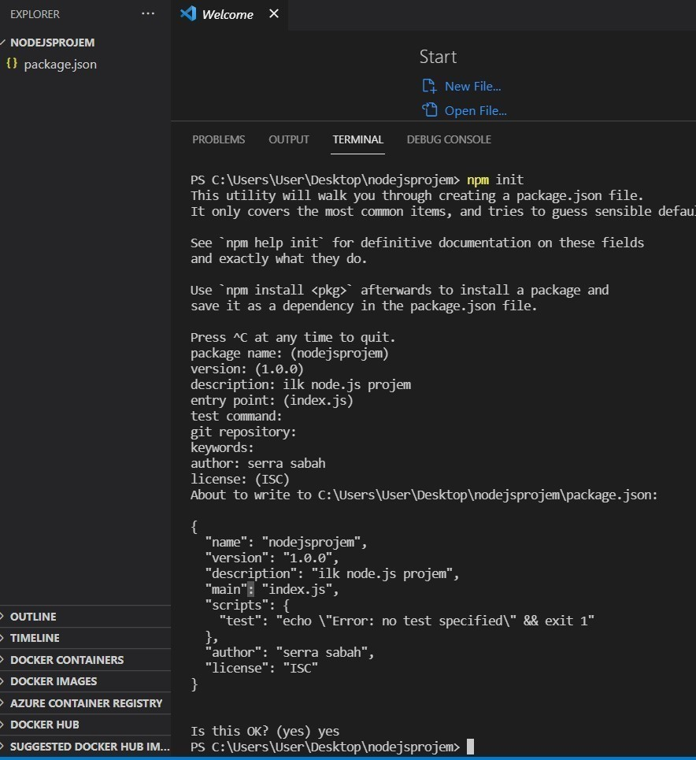

Node.js Kurulum
Node.js öğrenmek istiyorsanız Javasxript ve Html'in temel bilgilerini öğrenmeniz gerekiyor.Nodejs.org sitesinden kendi işletim sisteminize uygun olanı seçiniz. vx.x.x LTS ve vx.x.x Current olarak karşınıza iki farklı versiyon çıkıyor.
Lts: "Long Term Support" un kısaltımıdır, türkçeye anlamı olarak uzun süre destekli sürüm deninebilir. Aynı zamanda, LTS sürümler "ana sürüm"dür. LTS olmayan sürümler ise ara sürümdür ve LTS ye oranla çok fazla güncelleme alır ve içerisinde daha fazla hata bulundururlar.
Current: En son çıkan özellikleri kapsamaktadır.
İndirdiğiniz dosyayı açıp gelen adımarı ileri diyerek devam edin. Node.js'in bilgisayarınıza kurulumunu anlamanız için cmd'ye node --version yazın. Bu komut indirdiğiniz versiyonu göstermesi gerekir.
Visual Studio Code Kurulumu
Node.js geliştirme ortamımızı yapılandırmaya devam ederken sıra, kullanacağımız kod editörünü kurmaya geldi. VS Code; macOS, Linux ve Windows işletim sistemlerinde çalışan ve ücretsiz bir kod editörüdür. Akıcı ve hızlı çalışan arayüzü, dahili komut istemcisi, zengin eklenti desteği ve daha pek çok özelliğiyle VS Code; geliştiriciler tarafından sıklıkla tercih edilmektedir. VS Code'u Windows işletim sistemine kurmak için aşağıdaki işlem adımlarını takip edin:- VS Code Kurulum Dosyası (Harici bir siteye bağlantılar.)'nı bilgisayarınıza indirin.
- Kurulum dosyasını çalıştırın ve yönergeleri takip ederek kurulumu tamamlayın.
- Varsayılan olarak, VS Code C:\users\{kullanıcı adı}\AppData\ Local\Programs\Microsoft VS Code yoluna kurulur.
- VS Code'u başlatmak için Başlat menüsünü kullanabilir yada komut istemcisinden code . komutunu çalıştırabilirsiniz.
Node.js Package.json Dosyası
Bir klasör açalım. Ben nodejsprojem isimli bir klasör oluşturdum. Konsolu çalıştırıp komut satırına npm init yazalım. Konsol ekranı sırasıyla size version, description, entry point... gibi işlemleri soracaktır. Enter diyerek devam edebilirsiniz. En sonda size Is this OK? soracaktır. Bunu onayladıktan sonra klasörünüzde package.json isimli bir dosya oluşur.Package.json dosyası: projenizde kullanılacak olan bir konfigürasyon dosyasıdır. Proje geliştirme süreçlerinizde kullanacağınız npm paketleri bu dosya içerisine bir bağımlılık (dependency) olarak eklenecektir.

Node.js Proje Başlangıcı
Açtığınız klasörün içine .js uzantılı bir dosya oluşturun. Ben server.js ismiyle oluşturdum.Amacım node.js ile Microsoft sql server arasında bağlantı sağlayıp ms server'da olan norhtwınd database verilerine ulaşmaktır. Github hesabımda yer alan server.js dosyasındaki kodları yazabilirsiniz. Bu dosya sayesinde MS server'daki Northwınd database'deki Categories tablosundaki verilere ulaşıyorum. Visual Studio Code terminaline node server.js yazıyorum. Bağlantının sağlanıp sağlanmadığını kontrol edebilmek için internette http://localhost:3000 araması yapılır. Eğer verilerinizi görüyorsanız bağlantınız sağlanmış demektir.
server.js dosyası terminal
http://localhost:3000 sonucu

Referanslar
https://mergen.anadolu.edu.tr/courses/83/pages/visual-studio-code-kurulumuhttps://erhankocabuga.medium.com/node-js-kurulumu-ve-%C3%B6rnek-bir-node-js-projesi-yap%C4%B1m%C4%B1-c0be2bf834f1
https://alpmusti.com/2017/02/node-js-nedir-nasil-kurulur.html